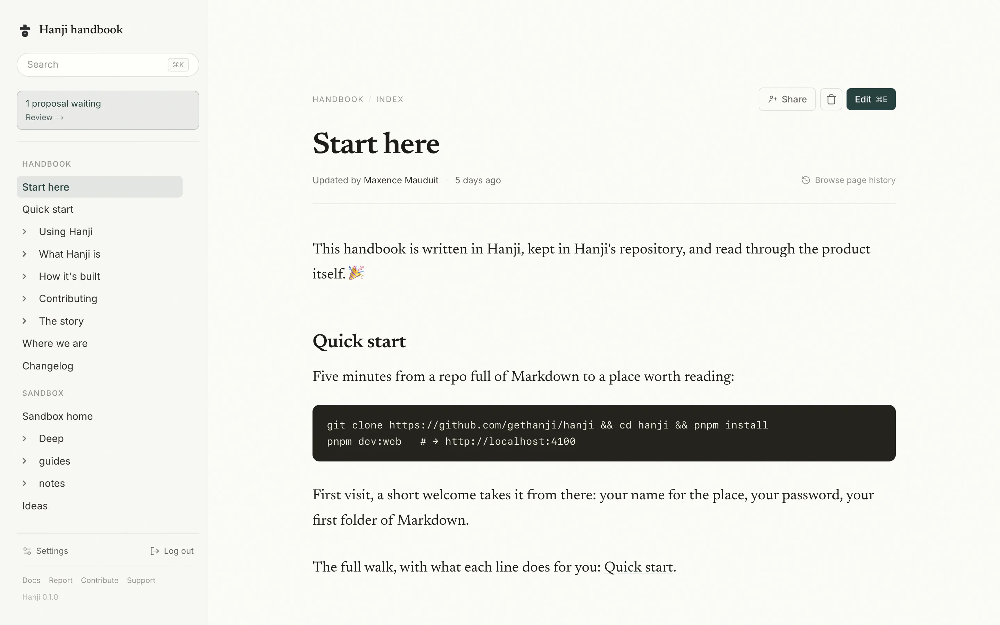
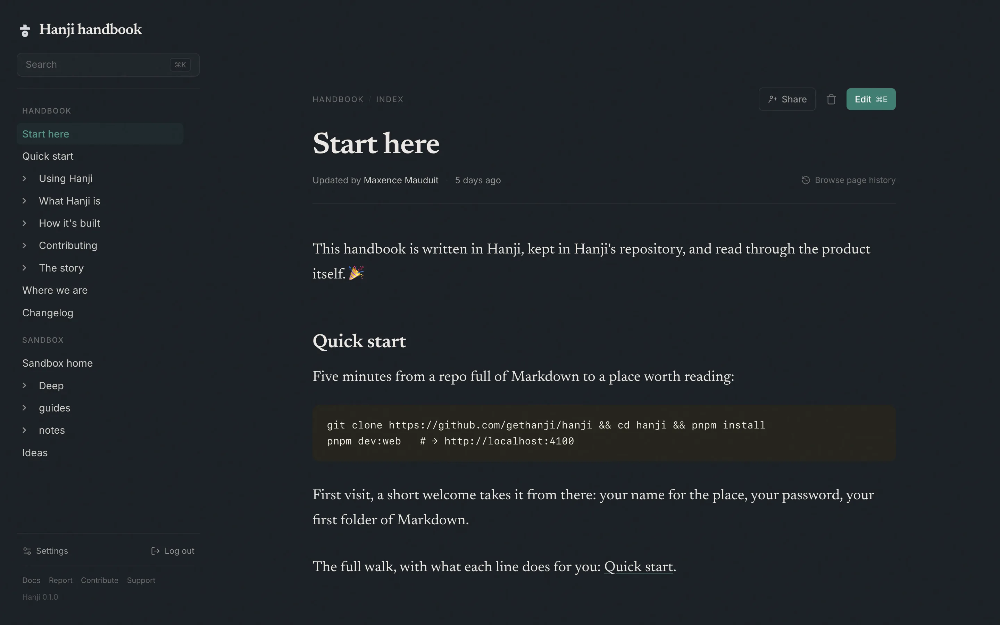
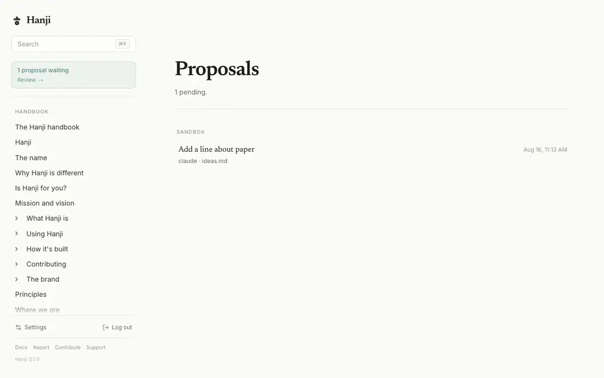
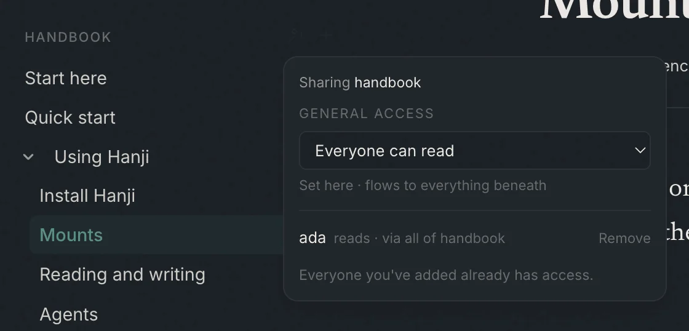
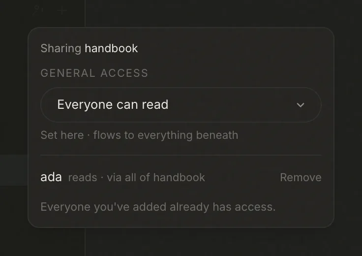

The agent-native knowledge base
Hanji keeps what a team knows as plain Markdown, in repositories you already own - a quiet paper front for people, a small protocol for agents, and a lock that goes down to a single file.
Pre-release. The handbook is public today; the code lands as one clean release, open source under AGPL.
committed - a one-line diff, nothing else touched
So we built the reverse.
Warm paper, a serif set for long reading, and edits made in place. Press Update and exactly one clean commit happens behind you - a one-word fix is a one-line diff, forever legible in history.


Coding agents read through MCP and contribute the way professionals do: a branch, a diff, and your decision. Their name stays in the history, because a year from now git blame should still tell the truth.

Open flows down; people are the exceptions that punch through. A note two people share is invisible to everyone else - tree, search, links, all of it - and a locked page looks identical to one that doesn't exist.
One read path enforces it, for humans and agents alike.


04 · THE WEIGHT
Not only a metaphor about longevity - a claim about weight, measured. Reads come off a local clone and a local index. There is no cloud in the loop, and the editor doesn't even load until you press Edit.
The zero is the point: nothing about Hanji's cost or weight grows because your team wrote more this month. All the numbers, measured →
05 · RUN IT YOUR WAY
Install, open, and a welcome screen does the wiring - your name for the place, your password, your folder of Markdown.
git clone https://github.com/gethanji/hanji pnpm install && pnpm dev:web # → localhost:4100 greets youQuick start →
One shared instance where the network signs people in. Nobody types a password.
export HANJI_TAILSCALE_OWNER=you@github next start -H 127.0.0.1 -p 4100 tailscale serve --bg 4100On your tailnet →
Scoped reads over MCP or plain HTTP - a bash script with curl counts as an agent - and edits that arrive as proposals.
pnpm hanji token my-claude notes=read+propose claude mcp add hanji --transport http \ http://localhost:4101/mcpAgents →
Everything you've opened to everyone, as a website - llms.txt included, nothing else leaks.
pnpm hanji rule handbook everyone-read pnpm hanji export ./sitePublish to the web →
All four ship in the first release. The handbook documents each of them today.
06 · THE DEPENDENCY THAT ISN'T
Most tools this year ship with a model inside and a meter running. Hanji is agent-native the other way around: your agents are welcome guests, never a dependency.
There is no API key in the setup, no model picker in the settings, no "bring your own key." Nothing about it stops working when the tokens run out - because there are no tokens.
No bundled model. No credits.
No wall between your writing and your agents.
Walk away whenever - it's Markdown in your repositories, and the code is yours to run, AGPL and free. The handbook you'll read next is itself a Hanji export.
One email when the code lands. Maybe three a year after.